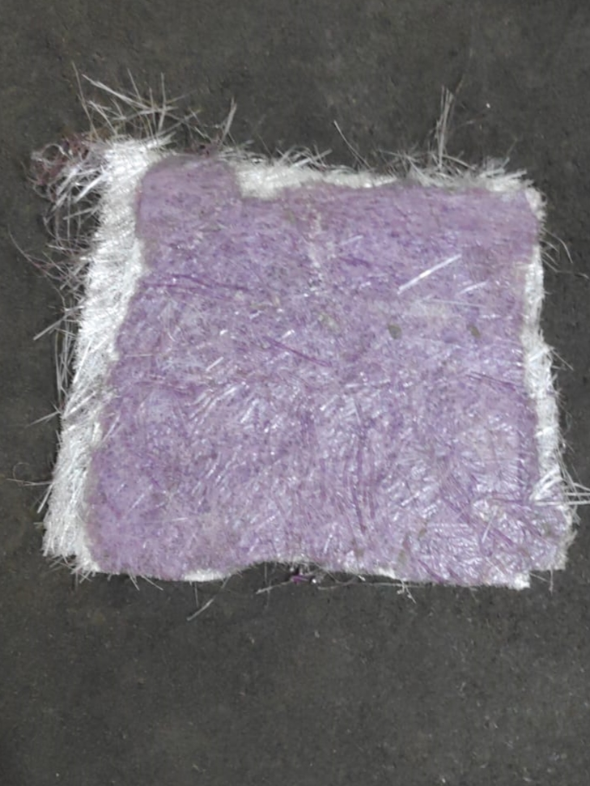
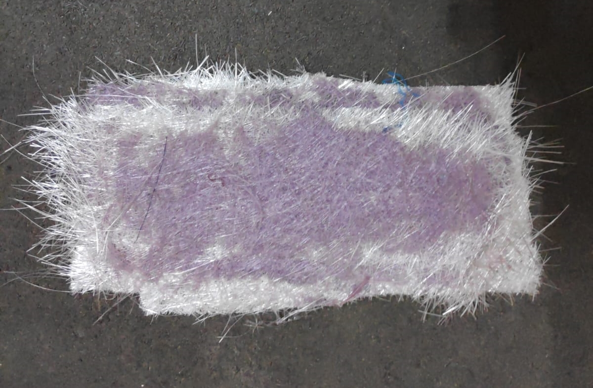
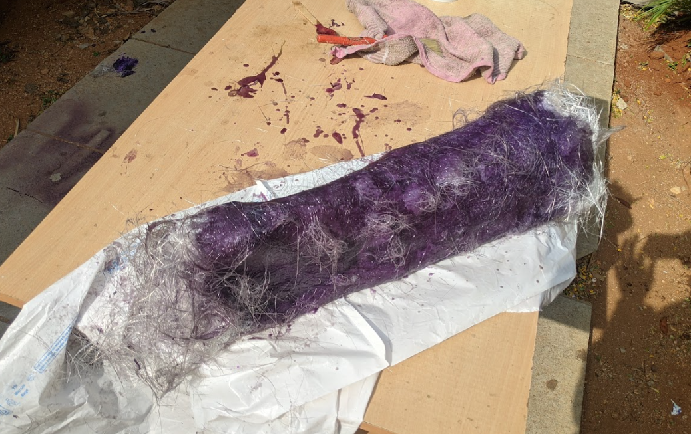

Exploring the manufacturing techniques of composites
A composite material (also known as a composition material or composite, which is the popular word) is made up of two or more constituent materials. These include a variety of materials with varying chemical and physical properties.
A composite material is made from hardened polyester resin, hardener, and catalyst, as well as glass fiber. Composite materials are frequently adaptable. They're certainly fascinating, and I've always wanted to play around with them.
Glass fiber sheets on rolls were difficult to get by. My companion and I were able to locate a store that sells all of the items I require for a fair price in late March.
When working with polyester resin, safety is crucial. I was equipped with a gas mask, rubber gloves, and safety glasses.
I tested various other samples too but unfortunately lost them as the wind was blowing heavily, they got blown away in the wind before I come back home.

This particular sample has too much resin on the face. This vastly increased the weight of the plate.

This sample was light weight and also strong as I made sure that the strands were layed in 45 degree angle.
